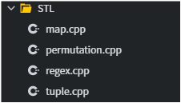

[LINUX] find command
"find" 명령어는 단어 뜻 그대로 리눅스 운영체제에서 파일 및 디렉터리를 검색할 때 사용하는 명령어이다.
그런데 리눅스의 파일 시스템 구조는 매우 복잡하기에 find 명령어는 손쉽게 파일을 검색하기 위한 다양한 옵션을 제공한다. 이번 포스팅 에서는 find 명령어의 기본적인 사용법과 자주 사용되는 기본 옵션들에 대해서 다루고자 한다.
* 개인적인 공부 내용을 기록하는 용도로 작성한 글 이기에 잘못된 내용을 포함하고 있을 수 있습니다.
content
#1 find 사용법
#2 find 명령어 예제
#3 find 명령어 에러
reference
https://coding-factory.tistory.com/804
#1 find 사용법
find [option] [path] [expression]-option
P : 심볼릭 링크를 따라가지 않고, 심볼릭 링크 자체 정보를 사용한다.
L : 심볼릭 링크에 연결된 파일 정보를 사용한다.
H : 심볼릭 링크를 따라가지 않으나, Command Line Argument를 처리할 때는 예외이다.
D : 디버그 메시지를 출력한다.
-path
상대 경로 & 절대 경로 모두 입력 가능하다. 기본적으로 LINUX는 [path] 를 생략 시 현재 위치(.)를 입력받은 것으로 간주하지만, UNIX의 경우 path를 생략 시 명령어 실행이 안되기 때문에 현재 위치를 나타내는 (.)을 작성 하는 것을 권장한다.
find -help 명령어를 입력하면 fInd 명령어에 대한 옵션과 표현식에 대해 자세하게 출력해 준다.
find [OPTION...] [PATH] [EXPRESSION...]
OPTION
-P : 심볼릭 링크를 따라가지 않고, 심볼릭 링크 자체 정보 사용.
-L : 심볼릭 링크에 연결된 파일 정보 사용.
-H : 심볼릭 링크를 따라가지 않으나, Command Line Argument를 처리할 땐 예외.
-D : 디버그 메시지 출력.
EXPRESSION
-name : 지정된 문자열 패턴에 해당하는 파일 검색.
-empty : 빈 디렉토리 또는 크기가 0인 파일 검색.
-delete : 검색된 파일 또는 디렉토리 삭제.
-exec : 검색된 파일에 대해 지정된 명령 실행.
-path : 지정된 문자열 패턴에 해당하는 경로에서 검색.
-print : 검색 결과를 출력. 검색 항목은 newline으로 구분. (기본 값)
-print0 : 검색 결과를 출력. 검색 항목은 null로 구분.
-size : 파일 크기를 사용하여 파일 검색.
-type : 지정된 파일 타입에 해당하는 파일 검색.
-mindepth : 검색을 시작할 하위 디렉토리 최소 깊이 지정.
-maxdepth : 검색할 하위 디렉토리의 최대 깊이 지정.
-atime : 파일 접근(access) 시각을 기준으로 파일 검색.
-ctime : 파일 내용 및 속성 변경(change) 시각을 기준으로 파일 검색.
-mtime : 파일의 데이터 수정(modify) 시각을 기준으로 파일 검색.
#2 find 명령어 예제
와일드 카드(*)를 포함해 find 명령어를 사용하면 다양한 방식으로 원하는 파일의 경로를 출력 가능하다.
#현재 디렉토리에서 "main.cpp" 라는 파일을 탐색한다.
find . -name "main.cpp"
#현재 디렉토리에서 확장자가 ".cpp"라는 파일을 탐색한다.
find . -name "*.cpp"
#현재 디렉토리에서 "test"로 시작하는 파일을 모두 탐색한다.
find . -name "*test"
#현재 디렉토리에서 "test"로 끝나는 파일을 모두 탐색한다.
find . -name "test*"
#3 find 명령어 에러
* 실습은 구름IDE 환경에서 진행하였다.
STL 디렉터리 내부에서 확장자가 .cpp로 끝나는 파일을 탐색하는 find 명령어를 실행해 보았다.

find . -name *.cpp다음과 같은 에러가 발생한다.
find: paths must precede expression: `permutation.cpp'
find: possible unquoted pattern after predicate `-name'?
이번에는 STL 디렉터리 내부에서 확장자가 .txt로 끝나는 파일을 탐색하는 find 명령어를 실행해 보았다.
find . -name *.txt.cpp 파일을 탐색할 때와는 달리 아무런 에러도 발생하지 않는다.
위와 같은 상황이 발생하는 이유는 find 함수 내부에서 와일드카드(*)를 사용 시 큰따옴표("")를 붙이지 않았기에 발생하는 에러이다.
와일드카드(*)는 실제로 프로그램에 넘겨지기 전에 치환되는 과정을 거친다.
예를들어 STL 디렉터리 에서 *.cpp 를 입력 시 map.cpp permutation.cpp regex.cpp tuple.cpp로 변환된다.
반면에 STL 디렉터리 내부에는 확장자가 *.txt 인 파일이 존재하지 않았기에 아무런 에러를 발생시키지 않았던 것이다.
따라서 find 함수를 사용 시 반드시 큰따옴표("")를 붙여 주도록 하자.
find . -name "*.cpp"./regex.cpp
./tuple.cpp
./map.cpp
./permutation.cpp